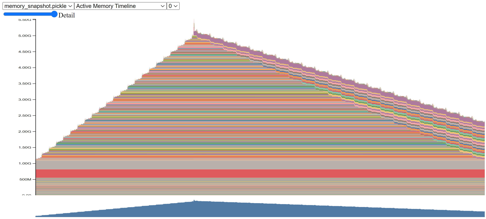

Conference Talk 5: Napkin Math For Fine Tuning with Johno Whitaker
- Mastering LLMs Course Notes: My notes from the course Mastering LLMs: A Conference For Developers & Data Scientists by Hamel Husain and Dan Becker.
- Introduction
- Good News & Bad News
- Training Neural Networks
- Why are we copying data around?
- Goal: Keep the GPU Fed
- Napkin Math: Understanding Memory Usage
- Napkin Math Code Demo
- Optimizing LLM Training for Different Hardware
- Q&A Session
- Recap
- Slides: Napkin Math For Finetuning
Introduction
- Goal: To provide insights into the factors influencing fine-tuning performance, enabling better decision-making in training models.
- Target audience: Individuals new to training models, particularly by fine-tuning existing large language models.
- Key questions addressed:
- Factors affecting model performance.
- Strategies for improving performance.
- Reasons for memory limitations and slow training times.
- Understanding and adjusting various parameters in configuration files.
- Approach: Utilizing a “napkin math” approach to provide a general understanding of the concepts without delving into intricate mathematical details.
- Disclaimer: Emphasizes that the information presented is simplified for clarity and may not be entirely accurate due to the constantly evolving nature of AI implementations.
Good News & Bad News
- Good news: The mathematical operations underlying model training are well-understood, enabling analysis and experimentation.
- Bad news:
- Discrepancies can exist between research papers, code implementations, and framework-specific implementations.
- The complexity of the underlying processes can be daunting.
- Keeping track of all the details and nuances is challenging.
- Multi-GPU setups introduce additional complexity
- Key takeaway: While a simplified approach can be helpful, acknowledging the inherent complexities is essential for accurate analysis and problem-solving.
Training Neural Networks
Training Loop
- The core cycle: Load data, feed it through the model, generate an answer, evaluate its quality, and update the model accordingly.
- Language model context: The correct answer typically refers to the next word in a sequence, and predictions are represented as probabilities for potential next words.
- Fine-tuning data: Datasets used for fine-tuning contain instruction-response pairs, allowing the model to learn from desired output patterns.
On Computers
- Hardware components: Understanding the roles of CPU, GPU, RAM, and their interconnectivity is crucial for performance analysis.
- Memory hierarchy: Different memory types (e.g., CPU cache, RAM, hard drive) have varying access speeds, influencing data transfer times.
Training Neural Networks
- Factors affecting performance:
- Data loading: Reading data from storage.
- Model computation: Performing mathematical operations within the model’s layers.
- Parameter storage: Memory required to store model parameters (weights and biases).
- Gradient calculation and storage: Computing and storing gradients for model updates.
- Optimizer operations: Additional storage and computations for parameter optimization.
- Key takeaway: Each step in the training loop incurs computational costs and memory demands, understanding these factors is crucial for optimization.
What takes up time?
- Computation: The number of mathematical operations performed.
- Memory management: Data transfer and storage within the memory hierarchy.
Why are we copying data around?
- Memory hierarchy and data transfer:
- Different memory types: CPU cache, RAM, GPU RAM, hard drives, etc., have varying speeds.
- Data movement: Copying data between these memory locations consumes time, impacting performance.
- Optimizing data flow: Minimizing unnecessary data transfers and utilizing faster memory options are crucial for optimization.
- Multi-GPU and distributed training:
- Inter-GPU communication: Sharing data between GPUs can introduce latency.
- Network communication: In multi-node setups, communication over the network becomes a bottleneck.
Goal: Keep the GPU Fed
- Goal: Continuously provide the GPU with data and instructions to avoid downtime.
- Ideal: Fit the entire model and data within the GPU RAM for fastest processing.
- Bottleneck: Large models and limited GPU memory can cause frequent data loading from slower memory, slowing down the training process.
Tricks to improve memory efficiency
- Techniques for keeping data closer to the GPU:
- Flash Attention and Fused Kernels: These reduce memory footprints and data transfers by changing how computations are performed.
- Gradient Checkpointing (Activation Checkpointing): Trades a small increase in compute time for significant memory savings by selectively recomputing activations during backpropagation.
- CPU Offloading: Leverages larger CPU RAM by temporarily storing parts of the model or data that are not actively being used on the GPU.
- LoRA (Low-Rank Adaptation):
- Freeze most model parameters and train only a small set of adapter parameters.
- Reduces memory requirements for gradients and optimizer states.
- Quantization:
- Represent model weights using fewer bits (e.g., 8-bit instead of 32-bit).
- Reduces memory footprint, allowing for larger models or larger batch sizes.
- Needs a little computation to dequantize
Napkin Math: Understanding Memory Usage
Full Fine-Tuning
- Problem: Full fine-tuning requires storing model parameters, gradients, and optimizer states, leading to high memory consumption.
- Explanation:
- Each parameter in a model requires multiple bits (e.g., 32 bits) to represent its numeric value.
- Gradients for each parameter are stored during training, consuming the same amount of memory as the parameters.
- Optimizers like Adam store additional states (e.g., momentum), further increasing memory usage.
- Example: A model with 100 million parameters using 32 bits per parameter consumes 400MB.
- Considering gradients and optimizer states, the total memory usage can be 1.2GB or higher.
LoRA (Low-Rank Adaptation)
- Solution: LoRA reduces memory usage by only training a small subset of parameters while keeping the rest frozen.
- Example: For every
1000 x 1000matrix, add a1000 x 32matrix
- Example: For every
- Explanation:
- Only trainable parameters require gradients and optimizer state storage.
- LoRA adds a small number of trainable parameters (e.g., 1% of the model size) to each large matrix in the model.
- Benefit: LoRA significantly reduces memory requirements, enabling training on larger models without fitting the entire model and its associated data into GPU memory.
Quantization
- Solution: Quantization reduces memory usage by representing model parameters with fewer bits.
- Explanation:
- Instead of using 32 bits, quantization uses 8 bits or even 4 bits per parameter.
- Benefit: Quantization shrinks the memory footprint of the model, allowing for larger model training or fitting on memory-constrained devices.
- Combination with LoRA (QLoRA): Quantize the frozen base model weights while keeping the LoRA parameters in higher precision for accurate training.
CPU Offloading Illustration
- Solution: Utilize CPU RAM to store model components and offload computations when GPU memory is insufficient.
- Explanation: Load and process one layer of the model on the GPU at a time, storing the remaining layers and intermediate data in CPU memory.
- Trade-off: While enabling larger model training, CPU offloading introduces latency due to data transfer between CPU and GPU.
LLM Context Length Considerations
- Problem: Large context lengths lead to increased memory consumption for storing activations.
- Explanation:
- Each layer’s output activations need to be stored for gradient calculations, and these activations accumulate with longer input sequences.
- Impact: Training LLMs with long context lengths requires careful memory management and might necessitate techniques like gradient checkpointing to reduce activation memory footprint.
Napkin Math Code Demo
- Demonstrates using PyTorch’s memory tracking tools to analyze memory usage during training.
Measuring Memory
- Challenge: Limited GPU RAM restricts the size of models and batch sizes during training.
- Solution: Use PyTorch’s memory tracking capabilities to understand and optimize memory consumption.
torch.cuda.max_memory_allocated: Provides a more accurate measure of actively used memory.torch.cuda.max_memory_reserved: Reflects total memory held by PyTorch, including pre-allocated space.
- Key Takeaway: Actively monitor memory usage to make informed decisions about model size, batch size, and other hyperparameters.
import torch, gc, inspect, transformers
from transformers import AutoModelForCausalLM, BitsAndBytesConfig
from accelerate.utils import set_seed
from peft import prepare_model_for_kbit_training
from peft import LoraConfig, get_peft_model
transformers.logging.set_verbosity_warning()device = "cuda"def cleanup():
"""Free up memory and reset stats"""
gc.collect()
torch.cuda.empty_cache()
torch.cuda.reset_peak_memory_stats(device)
cleanup()def print_memory_stats():
"""Print two different measures of GPU memory usage"""
print(f"Max memory allocated: {torch.cuda.max_memory_allocated(device)/1e9:.2f}GB")
# reserved (aka 'max_memory_cached') is ~the allocated memory plus pre-cached memory
print(f"Max memory reserved: {torch.cuda.max_memory_reserved(device)/1e9:.2f}GB")
print_memory_stats()Max memory allocated: 0.00GB
Max memory reserved: 0.00GB# QLoRA Forward + Backward pass
cleanup() # Clean slate each time
# Quantization config for QLoRA versions
bnb_config = BitsAndBytesConfig(
load_in_4bit=True,
bnb_4bit_compute_dtype=torch.bfloat16
)
# Load the model
model = AutoModelForCausalLM.from_pretrained(
"TinyLlama/TinyLlama-1.1B-Chat-v1.0",
low_cpu_mem_usage=True,
quantization_config=bnb_config,
use_cache=False
)
# This function has caused me lots of pain!
model = prepare_model_for_kbit_training(model)
# Add LoRA
config = LoraConfig(
r=16,
lora_alpha=32,
lora_dropout=0.05,
bias="none",
task_type="CAUSAL_LM"
)
model = get_peft_model(model, config)
# Move to GPU
model.to(device)
# Prepare the data
bs, ctx = 1, 1200 # batch size and context length
data = torch.randint(0, 10000, (bs, ctx), device=device)
# Forward pass
output = model(data, labels=data)
# Backward pass
output.loss.backward()
# Print max memory stats
print_memory_stats()
# Cleanup
del model, output, data
cleanup()Max memory allocated: 6.42GB
Max memory reserved: 7.09GBMemory History
- Challenge: Identifying specific memory bottlenecks within the training process.
- Solution: PyTorch’s
record_memory_historyfunction helps visualize memory usage over time. - Tool: Upload the generated pickle file to Pytorch’s Memory Visualizer for a detailed graphical representation.
- Documentation: Understanding CUDA Memory Usage
- Tutorial: How to save memory by fusing the optimizer step into the backward pass
Benefits of Memory History Analysis:
- Identify memory spikes: pinpoint operations causing significant memory increases.
- Understand memory allocation patterns: Visualize how memory usage evolves throughout the training process (forward pass, backward pass, gradient updates).
- Evaluate optimization strategies: Observe the impact of techniques like gradient checkpointing and quantization on memory consumption.
Real-World Examples
- Bug Detection: Unusually high memory spikes revealed incorrect implementations or unintended use of trainable parameters.
- Memory Leak Identification: Gradual memory escalation over multiple training steps pointed to issues with gradient or loss clearing.
- Kernel Optimization: Analysis highlighted inefficiencies in HuggingFace’s Transformers library, prompting a switch back to a more memory-efficient attention kernel.
cleanup()
# Load the model
model = AutoModelForCausalLM.from_pretrained(
"TinyLlama/TinyLlama-1.1B-Chat-v1.0",
low_cpu_mem_usage=True,
quantization_config=bnb_config,
use_cache=False
)
model = prepare_model_for_kbit_training(model)
model = get_peft_model(model, config)
model.to(device)
# Prep the data
data = torch.randint(0, 10000, (1, 1000), device=device)
# Start recording
torch.cuda.memory._record_memory_history()
# FOrward and backwards pass
output = model(data, labels=data)
output.loss.backward()
# Save the snapshot and stop recording
torch.cuda.memory._dump_snapshot("memory_snapshot.pickle")
torch.cuda.memory._record_memory_history(enabled=None)
# Clean up
del model, output, data
cleanup()Results viewed in https://pytorch.org/memory_viz:

Optimizing LLM Training for Different Hardware
- Case Study: A Dual 3090 ‘Basement Rig’
GPU Limitations & Data Transfer Bottleneck
- Training LLMs often involves frequent data transfers between CPU memory and GPU memory.
- In systems with limited GPU memory or slow interconnects, these transfers become a significant bottleneck.
- Each layer of the model might require loading weights onto the GPU, performing computations, and then repeating the process for the next layer.
Optimizing for Memory-Bound Scenarios
- Goal: Minimize data transfer cycles by maximizing computation done per load.
- Example: Using a larger batch size allows processing more samples per load, reducing the total number of loads required.
- Techniques:
- Quantization: Reduces the precision of model weights, making them faster to transfer and process.
- QLoRa: A memory-efficient training method that further reduces memory footprint compared to standard LoRa.
- Example: The “3090 basement rig” showed significant speed improvements when using these techniques due to a larger achievable batch size.
Impact of Hardware on Optimization Strategies
Memory Bandwidth Constraints: On slower machines or those with limited interconnect bandwidth, optimizing for memory bandwidth is crucial. Techniques like quantization and larger batch sizes yield significant gains.
High-End Systems:
- Systems like the H100 with fast NVLink interconnects and ample GPU memory minimize the data transfer bottleneck.
- Model weights can reside in fast GPU memory, even across multiple GPUs, allowing for rapid loading.
- Computation becomes the limiting factor, not memory bandwidth.
Example: In tests on an H100, increasing batch size or using quantization didn’t significantly impact runtime. The bottleneck was compute speed, not data transfer.
Adapting to Hardware Limitations
- Understand Your Hardware: Identify whether your system is memory-bound or compute-bound.
- Optimize Accordingly:
- Memory-Bound: Prioritize techniques like quantization, QLoRa, and increasing batch size to minimize data transfer.
- Compute-Bound: Focus on maximizing computational efficiency, as data transfer is less of a concern.
Q&A Session
CPU Offloading
Question: Is CPU offloading useful for training or just inference?
Answer: CPU offloading can be beneficial for training large models that exceed single GPU memory, even with multiple GPUs. It allows for larger batch sizes by storing model weights on the CPU and copying them to the GPU as needed. However, it’s less effective with smaller models or abundant GPU memory.
Recommendation: Start with default settings and gradually introduce optimizations like quantization, batch size increases, data parallelism, and sharding, evaluating performance gains at each step.
Quantization Sweet Spot
Question: How to find the optimal balance between compression and accuracy with quantization?
Answer: Quantization below 4 bits can negatively impact accuracy. Combining 4-bit quantization with LoRA (adapters) often maintains performance comparable to no quantization.
Recommendation: Use 4-bit quantization with LoRA as a starting point. Keep the LoRA in higher precision.
Gradient Accumulation
Question: Clarification on gradient accumulation and micro batch size.
Answer: Gradient accumulation simulates larger batch sizes by accumulating gradients over multiple smaller “micro batches” before updating model weights. This is useful when target batch sizes exceed GPU memory.
Example: To achieve an effective batch size of 32 with a GPU limited to 8 samples, run 4 micro batches of 8 samples each before updating.
Recommendation: Use gradient accumulation to reach a reasonable effective batch size (16, 32, 64), particularly when training with small batch sizes (1 or 2).
Multiple LoRAs
Question: Do multiple LoRAs update the same or different model parameters?
Answer: Typically, multiple LoRAs update the same weights. Each LoRA targets specific layers defined in its configuration.
Recap
- Balancing Act: Fine-tuning involves minimizing data movement and maximizing computation efficiency.
- Memory Management:
- LoRA: Reduces memory by training a smaller set of parameters.
- Quantization: Stores weights using fewer bits.
- Experimentation: Key to finding the right trade-offs between memory, speed, and accuracy.
- Memory Allocation:
- Model Size: Larger models require more memory for weights and gradients.
- Batch Size and Context Length: Increasing either requires more memory for activations and intermediate values.
- Memory Optimization Strategies:
- Reduce context length if possible.
- Quantize weights.
- Offload to CPU.
- Practical Estimation: Instead of complex formulas, estimate memory requirements based on measurements from a single layer and extrapolate for the entire model.
- I’m Christian Mills, a deep learning consultant specializing in computer vision and practical AI implementations.
- I help clients leverage cutting-edge AI technologies to solve real-world problems.
- Learn more about me or reach out via email at christian@christianjmills.com to discuss your project.